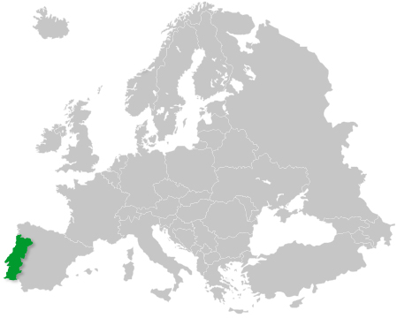

Dados Gerais
Localização Geográfica
Portugal, oficialmente República Portuguesa, é um Estado da Europa Meridional, fundado em 1143, que ocupa uma área total de 92.212 Km2. A parte continental situa-se no extremo Sudoeste da Península Ibérica, fazendo fronteira a norte e a leste com a Espanha, e a oeste e a sul com o Oceano Atlântico. O território português inclui ainda duas regiões autónomas: os arquipélagos da Madeira e dos Açores, localizados no Oceano Atlântico. O arquipélago da Madeira é constituído pelas ilhas da Madeira, Porto Santo, Desertas e Selvagens, e o arquipélago dos Açores é formado por nove ilhas e alguns ilhéus: Santa Maria, São Miguel, Terceira, Graciosa, São Jorge, Pico, Faial, Flores e Corvo.
Clima
O clima português é caracterizado por invernos suaves e verões amenos, variando, no entanto, de região para região. No norte registam-se precipitações mais elevadas e temperaturas mais baixas, mas é no interior que se registam as maiores amplitudes térmicas. A sul do Tejo, o maior rio da Península Ibérica, fazem-se sentir as influências mediterrânicas, com verões bastante quentes e prolongados, e invernos curtos e de pouca pluviosidade. A Madeira regista um clima de tipo mediterrânico com temperaturas amenas todo o ano, enquanto os Açores apresentam um clima temperado marítimo com chuvas abundantes
População
Portugal é um país com 10,6 milhões de habitantes (2011) e uma densidade demográfica de 115,4 habitantes/km2, com uma maior concentração populacional junto à faixa litoral.